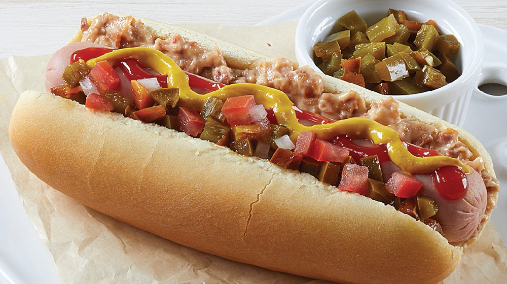

Perrito caliente

Salchicha caliente en un pan.
El perrito caliente es una comida rápida popular que satisface. Una salchicha o frankfurt cocinado es colocado en un pan largo con los aderezos de preferencia. La salchicha caliente atraviesa el pan, haciéndolo ceder bajo su peso.
Cada mordida produce el crujido del pan y el sabor de la salchicha especiada. Mostaza, kétchup, cebolla, queso y tocino son aderezos populares que se deslizan por la salchicha, pan y manos. El perrito caliente se disfruta de pie, caminando y puede ser desordenado, pero ese es parte de su encanto. Es una experiencia casual que evoca nostalgia por días más simples.
Ingredientes
- Salchichas o frankfurts
- Pan largo estilo barra
- Mostaza
- Kétchup
- Cebolla en rebanadas
- Queso cheddar rallado
- Tocino
- Mantequilla
Como hacerlo:
- Cocina las salchichas en una sartén con agua hasta que estén calientes, aproximadamente 5 minutos. Escurre y reserva.
- Corta los panes a la mitad, a lo largo. Coloca mantequilla por ambos lados del pan.
- Coloca el pan con la mantequilla hacia abajo en una sartén a fuego medio. Tuesta hasta que esté ligeramente dorado, aproximadamente 2 minutos.
- Voltea el pan y coloca las salchichas sobre la mitad inferior. Cubre con los aderezos de tu elección como mostaza, kétchup, cebolla, queso y tocino.
- Cubre con la mitad superior del pan. Sirve caliente.
- Opcional: Calienta el perrito completo en la sartén por 30 segundos antes de servir para que el queso se derrita. Acompaña con papas fritas. ¡Disfruta tu perrito caliente!